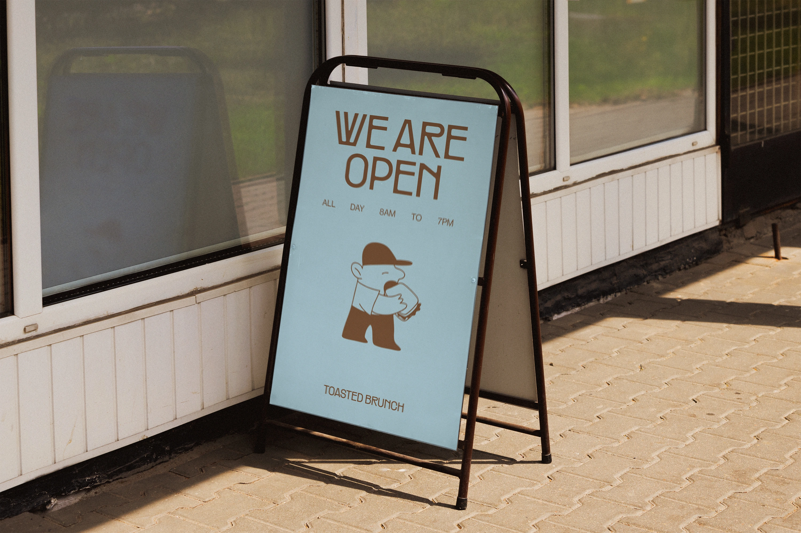
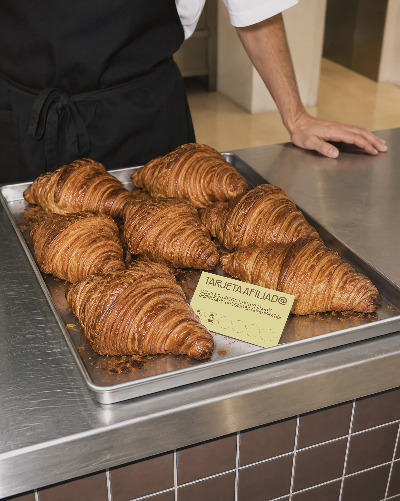
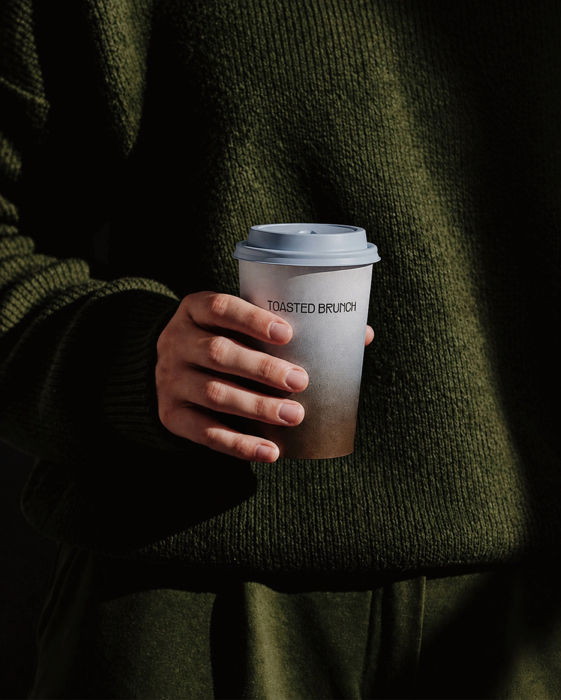
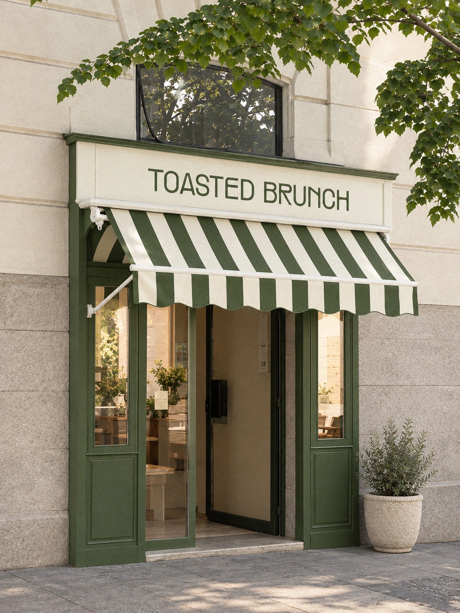
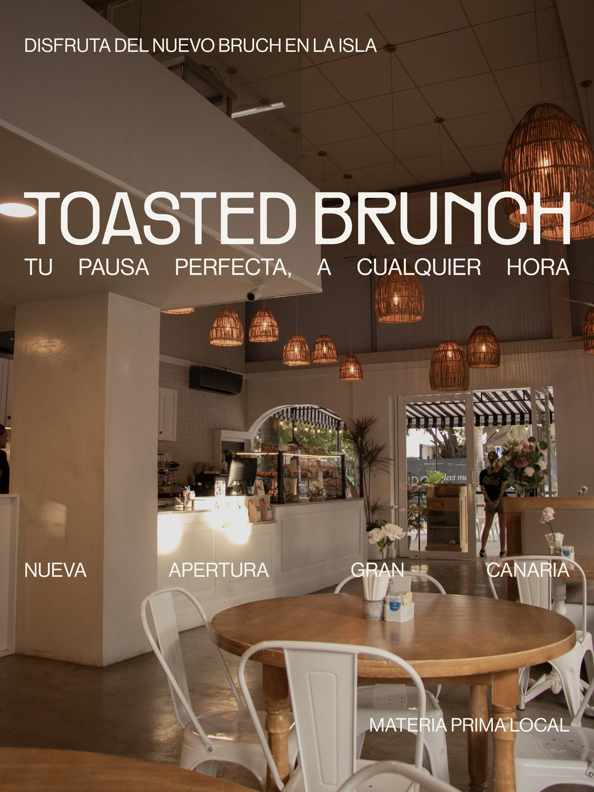
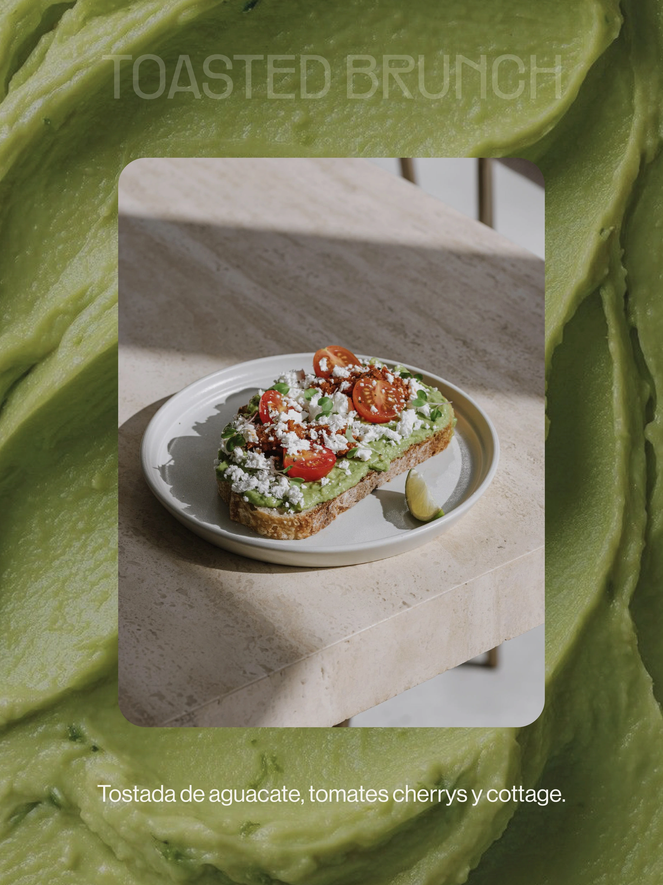
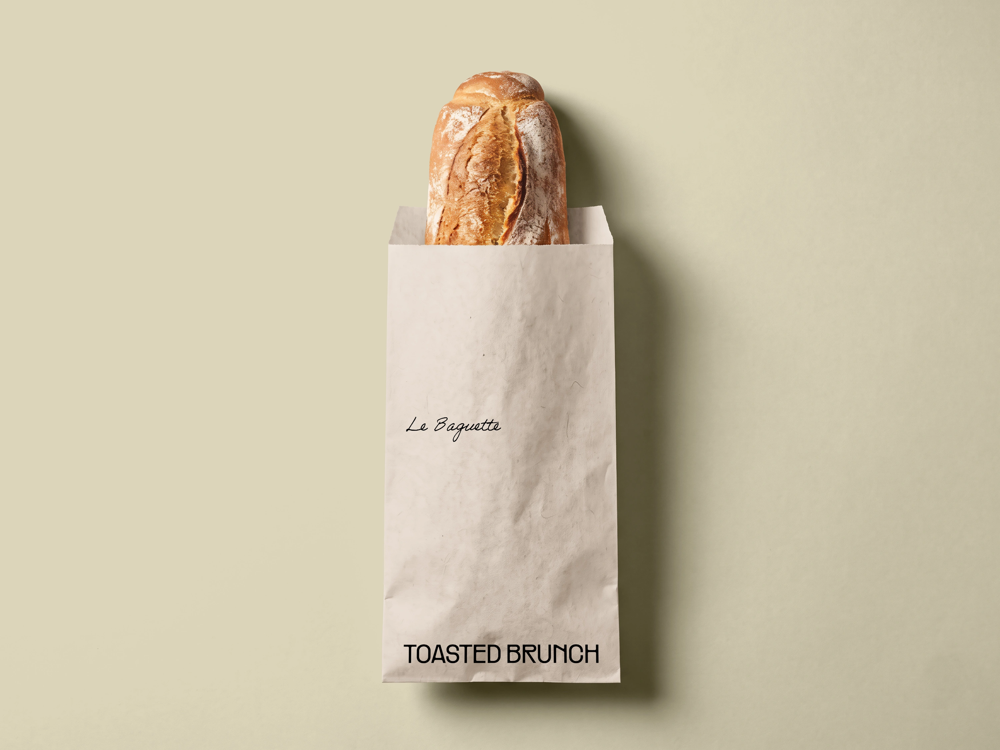
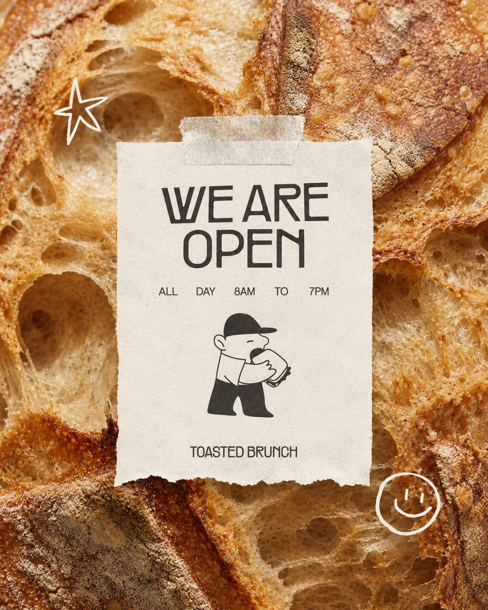
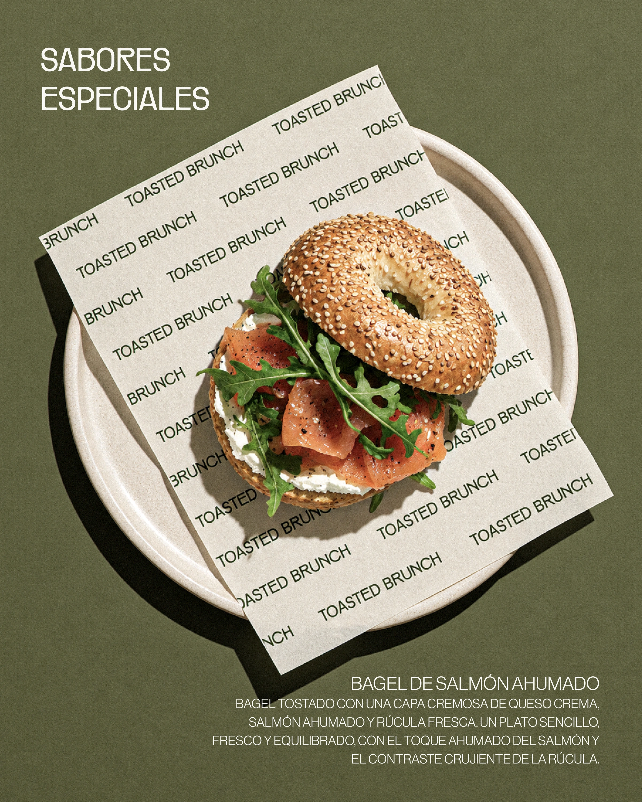
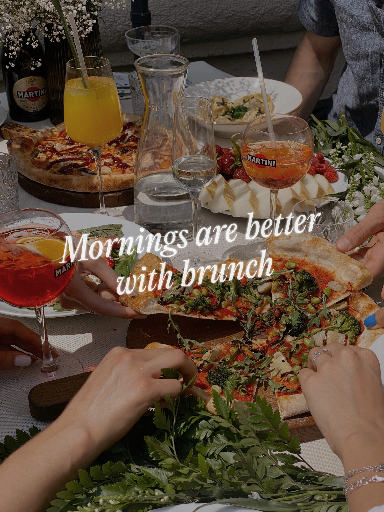

TOASTED BRUNCH

Toasted Brunch nace para ser tu pausa perfecta, a cualquier hora. Un brunch nuevo en Gran Canaria, con materia prima local y una identidad que huele a pan recién tostado.

La marca gira alrededor de un personaje: un pequeño cliente con gorra que no suelta su tostada. Él firma el cartel de la puerta, el menú y la bolsa de la baguette, y convierte cada pieza en una invitación a quedarse un rato más.


Verde oliva, crema y las rayas del toldo. Una paleta que sale de la fachada y llega al vaso de café, a la tarjeta de afiliados y a las redes. Mismo tono, mismo mood, en la calle y en la pantalla.









Huele a brunch. Y a felicidad.